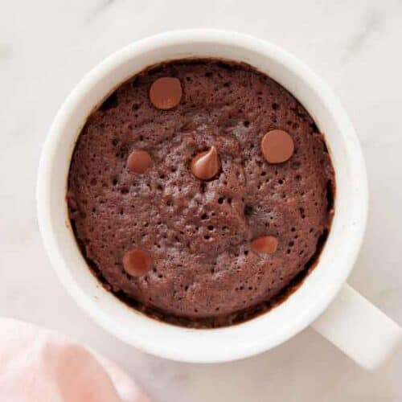

Home
Chocolate Mug Cake

Description
Chocolate mug cake is a quick dessert made in a single mug using simple ingredients.
It's soft, chocolatey, and perfect when you want something sweet without baking an entire cake.
Ingredients
- All-purpose flour
- Sugar
- Cocoa powder
- Baking powder
- Milk
- Oil
- Vanilla essence (optional)
- Chocolate chips (optional)
Steps
- Add all the dry ingredients to a mug and mix well.
- Pour in the milk, oil, and vanilla essence and stir until smooth.
- Add chocolate chips if using.
- Microwave the mug for about 1-2 minutes until the cake is set.
- Let it cool slightly and enjoy.